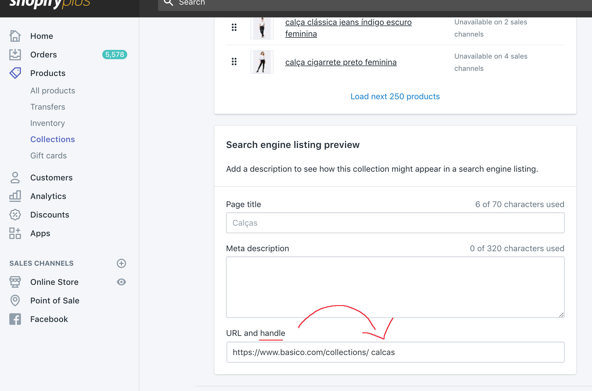

Esse Widget imprime uma vitrine na página.
Importante lembrar que ele não trás nenhum título, banners da vitrine, e nem as sub-vitrines. Mas caso você queira usar várias vitrines, basta replicar o widget.
<landing-collection handle="calcas">
</landing-collection>
| Código | Nome | Descrição | Exemplo |
|---|---|---|---|
| handle | Referencia da Landing Page | O shopify chama isso de Handle, e ele também pode ser encontrado na URL da vitrine. | camisetas |
| filter | Filtro da Vitrine | Uma ou mais tags usadas para filtrar os produtos da vitrine. | masculino |
| limit | Limite de Produtos | Determina quantos produtos vão aparecer na sua vitrine. Se a vitrine tiver mais itens, estes serão cortados. | 4 |
Todas as vitrines possuem seu próprio handle, e ele sempre é único. Para saber qual é o handle, abra a página em "Collections -> Sua Collection", e role a tela para baixo, conforme a imagem:
Esse Widget pode ter várias aplicações, mas para simplficar, vou colocar aqui a aplicação mais completa de todas.
<landing-collection handle="calcas" filter="para-ela" limit="4">
</landing-collection>
Este exemplo renderiza a vitrine de calças apenas com produtos femininos e limitados a 4 produtos: